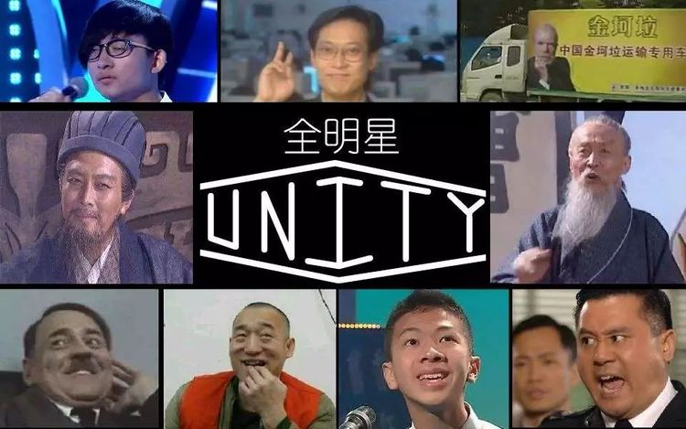

何謂鬼畜 ?
☞ 注意，我現在講的東西因為主要是來是對岸，所以許多敘述會以對岸的網站BiliBili為基準，且其中可能會摻雜個人見解，還請見諒。
空格在這裡我們談的"鬼畜"並不是源自佛教用語、後引申為殘忍無道的意思，而我們現在所要講的東西最初的名字也不是鬼畜，它原本的名字是"音MAD"。
空格音MAD，全稱Music Anime Douga，意思為音樂動畫。但即使有動畫兩個字，音MAD的主軸是放在音樂上 : 將聲音素材作為樂器重新詮釋音樂。
空格至於為何它會被稱為鬼畜則是因為在08年的一個名為《M.C.ドナルドはダンスに夢中なのか？最終鬼畜道化師ドナルド・Ｍ》音MAD短片(對岸稱為"最終鬼畜藍藍路")的爆紅，再流入中國後由於大部分的人還不知道"音MAD"這個名詞，於是人們開始以鬼畜作為這類短片的簡稱。
空格而經過時間的流逝，現在的"鬼畜"也已經無法直接稱作音MAD了，它現在混入了太多其他的要素導致它跟以音樂為主軸的音MAD差異不小。現在的"鬼畜"除了包含原本音MAD的要素，還加入了以素材為歌手的種類、以作者自己創作的世界觀演出的小劇場以及純粹搞笑的短片等等。
空格至於鬼畜最重要的素材，其來源可以說是包羅萬象，從影視人物到政經名人、還有廣告影集到動畫影片等等都有。
其中幾個常常出現的人物們就被稱之為"鬼畜全明星"。
